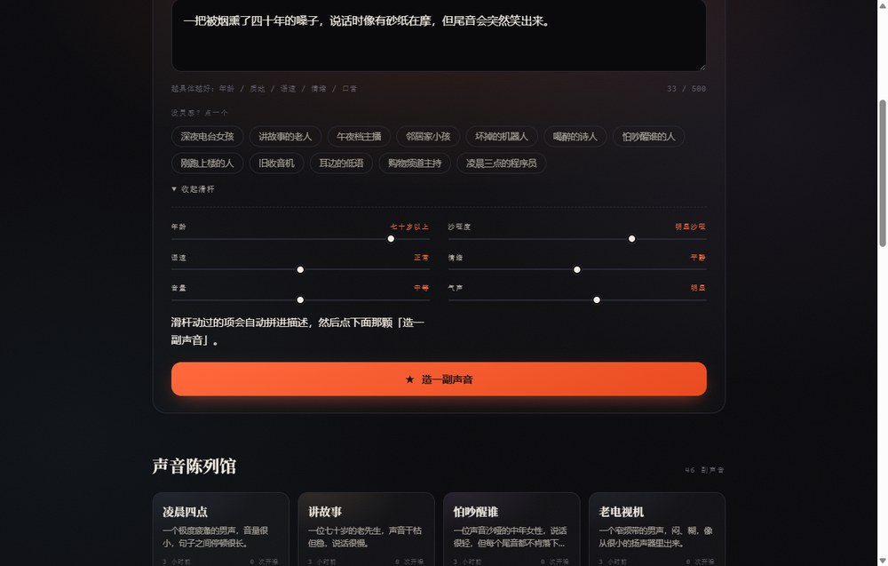
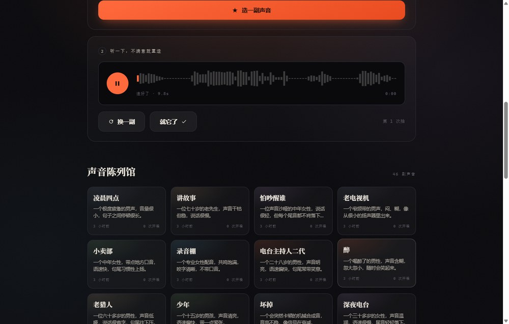
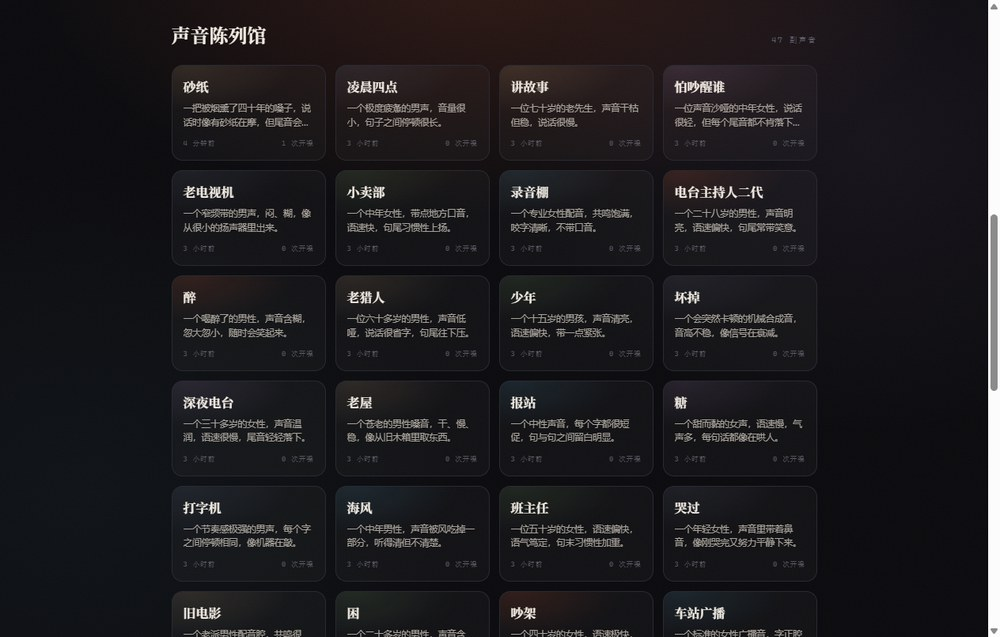
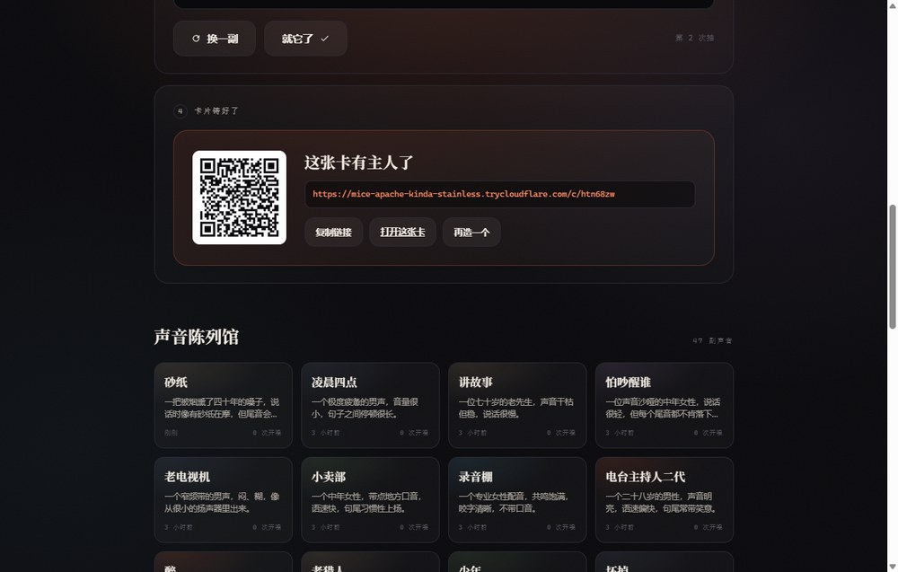
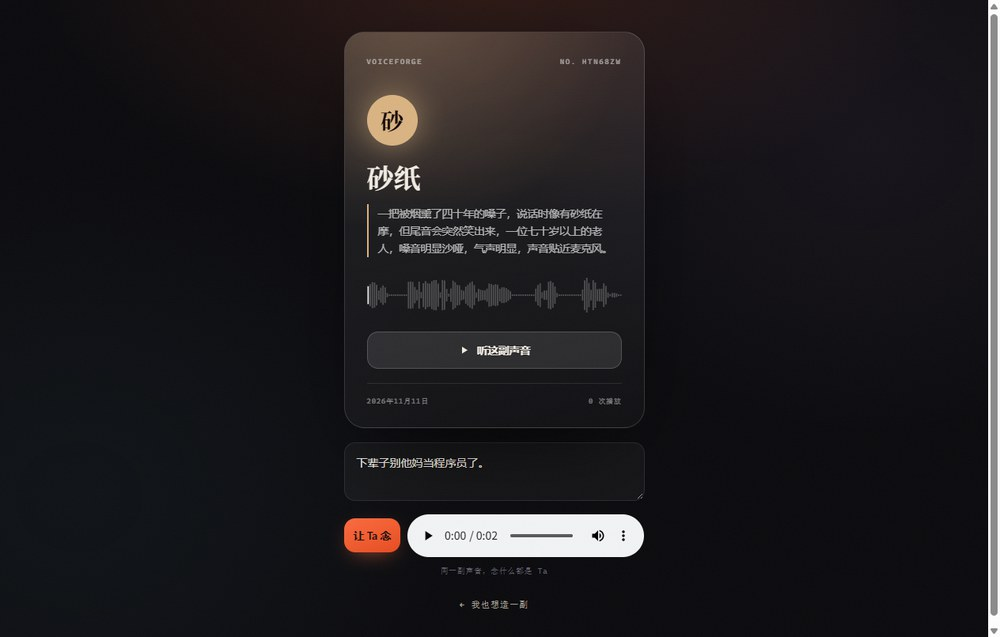

全程没录一秒音。你说的每一个字，AI 都能给你一张嗓子。
我做了个东西，叫造声。
你在框里写一句话——
一个五十多岁的东北男人，嗓门大，说话像在跟人吵架，但每句结尾都带着笑。
八秒钟后，这副嗓门就活了。它会开口说：「你好，我是刚刚被造出来的声音。你听，这就是我。」
跟你不满意？点「换一副」，它再给你一副完全不同的嗓子。同一句话，造三次，就是三个人。
满意了？起个名、挑个颜色，锁成一张声音卡。卡上有编号、有波形、有二维码。别人扫开这张卡，能让这副声音念他自己想听的话。
我在卡片页里输了一句「下辈子别他妈当程序员了」，让一个我十分钟前才编出来的老头，用他的嗓门把这句话念了出来。
错位感很强：这句话不是他说的，是我让他说的。
你有没有发现，所有「让 AI 说话」的产品，都卡在同一件事上：声音从哪儿来。
阿里云百炼有个能力叫声音设计（CosyVoice voice design），它把这件事反过来了：
不给样本，给一句描述。 它直接合成一副符合描述、此前世界上不存在的嗓子，还返回一个能长期复用的 voice_id。
接口是接口，不是产品。我把它做成了一个能玩、能传的东西。
描述越物理越好。别写「好听的声音」，写：
年龄多大 / 声带粗不粗 / 语速快不快 / 说话时在笑还是在忍 / 有没有气声
首页给了 12 个灵感标签，点一下就填进去：深夜电台女孩、讲故事的老人、坏掉的机器人、喝醉的诗人、旧收音机、凌晨三点的程序员……

不想写字就拉滑杆：年龄、沙哑度、语速、情绪、音量、气声。只有你动过的那几根会被翻译成文字拼进描述——没动过的不算数，不然每副声音都会带上「三十岁、嗓音干净」这种默认值。
点「造一副声音」，等 6–9 秒。
这里有个我觉得最有意思的地方：同一句描述，每次造出来都不一样。
我特意测了三次：
| 第几次 | voice_id 尾段 | 音频 md5 | 耗时 |
|---|---|---|---|
| 1 | tri0-596efce4 |
b8452c18… |
8.9s |
| 2 | tri1-c73663d7 |
b73e7685… |
8.0s |
| 3 | tri2-df547361 |
ea7c7c06… |
8.1s |
三个完全不同的 voice_id，三段 md5 不同的音频。

这意味着什么？意味着它不是「从一百副预设嗓子里挑一副」，而是每次都真的现造一副新的。所以你抽卡的欲望会停不下来——就像开盲盒，但盲盒里装的是声带。
我连着造了 47 副，把满意的都留下来了——你现在点开首页底部的「声音陈列馆」，每一张都能点开听。47 条描述里，我自己最想听的是那条「像在雨里等了两小时、但还想再等一会儿」的。

起个名（老周 / 深夜三点 / 雨里的人）、选个颜色、铸成卡。
卡片长这样：

编号是随机生成的，波形是真波形——前端把音频拉下来，AudioContext.decodeAudioData 解出 PCM，按块取绝对峰值，画 96 根柱子。不是随机数，也不是贴图。
这是我觉得这个项目跟「音色试听 demo」最不一样的地方。
点开 /c/<卡片id>，任何人都能输入一句话，让这副声音念出来。上限 300 字。

声音有了归属，也就有了社交属性。你造的不是一个「功能」，是一个「角色」。
说出来有点不好意思：没有前端框架，没有构建工具，没有 node_modules。
FastAPI + 原生 HTML/CSS/JS + SQLite
三个 Python 文件（路由 / 百炼客户端 / 存储），一套静态页面。pip install -r requirements.txt && python run.py 就能跑。
为什么这么选？因为我想在三天里把产品做完，而不是把脚手架搭完。
几个我自己比较满意的取舍：
/api/design 只落草稿，点「就它了」才把音频复制一份成正式卡片。草稿可以随便清理，卡片永远不会失效。Set 记录 touch 过的滑杆，拼描述时只拼这些。这个小细节让默认值不再污染结果。url error, please check url！我一开始把语音合成打到了 /api/v1/services/aigc/multimodal-generation/generation。
返回 400，报 InvalidParameter: url error, please check url！。
我以为是网络问题，换了三个域名，加了三层重试，怀疑了代理、怀疑了防火墙、怀疑了人生。
最后在阿里云的错误码文档里看到这一条的官方解释：
原因一：模型名称与 API 端点不匹配。
语音合成的端点是 /api/v1/services/audio/tts/SpeechSynthesizer。那个 multimodal 端点是给通义万相/千问 VL 这类多模态模型用的。
一行 URL，卡了我一晚上。
阿里云文档写的是 https://{WorkspaceId}.cn-beijing.maas.aliyuncs.com/...。
我这儿 getaddrinfo failed。
换成旧域名 dashscope.aliyuncs.com——通了，137ms。
Key 是刚在「系统属性 → 环境变量」里设的，os.environ 里没有。
不是没设成功，是当前这个进程的 env 快照是旧的。程序里加了个兜底：进程里读不到，就去注册表读一次 [Environment]::GetEnvironmentVariable('DASHSCOPE_API_KEY','User')。
cv.clientWidth 在元素 display: none 的时候是 0。于是 cv.width = 0，之后就算显示了，画布还是 0 像素宽，波形永远空白。
修法两行：if (!W || !H) return;，外加面板显示后主动重绘一次。
我一直觉得，AI 生成最迷人的地方不是「替你干活」，是「造出原本不存在的东西」。
文字可以凭空造，图片可以凭空造。声音一直不太行——它总得有个「原型」。
这次终于可以了。你可以造一副只存在于你描述里的嗓子，然后让它说任何话。
去造一副吧。造个你外婆的声音，造个你想象中二十年后的自己，造个你家猫如果会说话会是什么动静。
反正，它不用真的存在。
代码与启动方式：github.com/hgyguyg/voiceforge 在线版：mice-apache-kinda-stainless.trycloudflare.com（临时隧道，随时可能失效） 造一副大概花 6–9 秒，按百炼的调用量计费